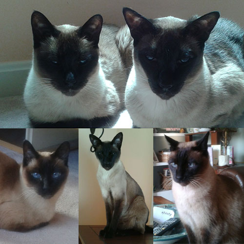

April 2014

Our beautiful Siamese cats’ names are Silver and Jasper. People always assume that Silver and Jasper are from the same litter, but they’re not even related. Silver is 16 years old and Jasper is 14. Silver was a surprise Valentine present for our daughter when she was in kindergarten. Jasper came along two years later as a companion for Silver. In their younger days Silver and Jasper used to roam our neighborhood and were known for their adventurous antics. Today they are laid back house cats. Silver likes to greet all house guests and lets you know when it’s time to eat. Jasper is shyer and rarely greets visitors. Silver and Jasper are very affectionate wonderful pets and we hope to have them for several more years. |